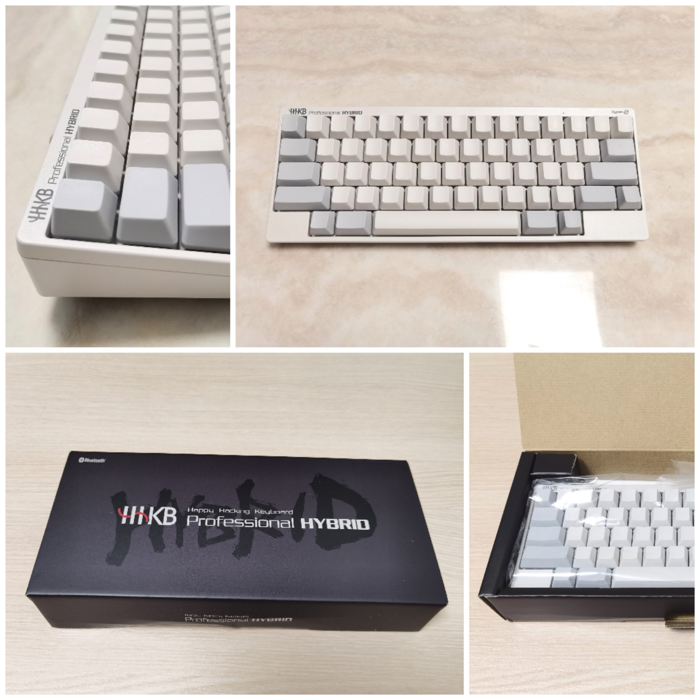
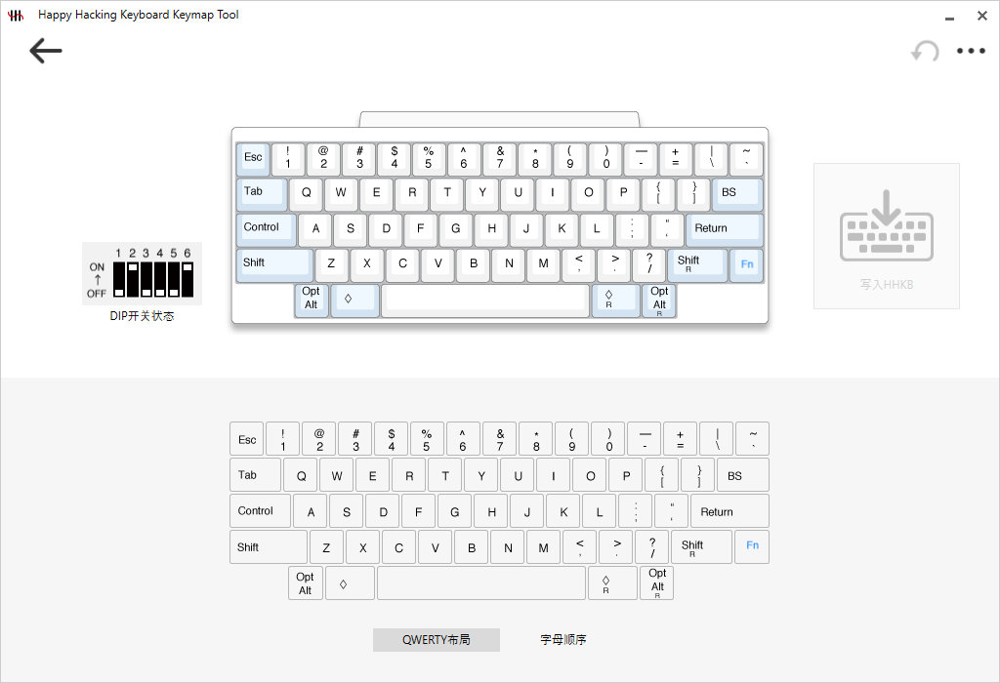
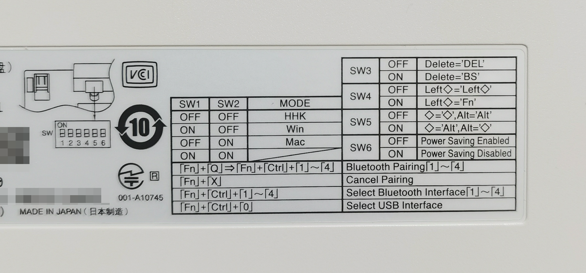

2020 年中设备升级之三：“离经叛道”的 HHKB¶
与迷你啦擦肩而过¶
在更新完 MBP 之后， 我就打算购买一套新的无线外设与之匹配， 替换掉现在正在使用的有线设备。
作为码字工作者， 首先考虑的肯定是键盘了。 市面上符合我要求的“无线”和“小键盘”（67键或者87键）这两个条件的键盘并不多， 并且从质量出发只考虑大牌子， 很快就锁定了菲尔可（Filco）的 迷你啦 和圣手二代。
{kind=link}
Filco 的迷你啦 67 键键盘¶
不得不说， Filco 的白绿配色真的十分让人中毒， 加上迷你啦的小巧外形， 可谓深得我心， 当时差点就直接下单了。 但是在仔细观察过迷你啦的键位设置之后， 我最终还是放弃了这款键盘。
原因在于我在日常写作中，
需要大量用到标准键盘左上角的 ESC 键和反引号 ` 键，
而迷你啦却将这两个键合二为一了。
这意味着我在使用左上角的反引号键时必须组合按下 ESC 键和 Fn 键，
而这无疑会给写作特别是高速输入带来麻烦
（尽管键盘右上角的退格键旁边还有一个反引号键，
但那个位置实在是太容易误触旁边的其他键了，
不太可能像左上角的 ESC 键那样轻松地实现高速盲打）。
虽然退而求其次使用圣手二代可以解决上述问题， 但 87 键又会带来多余的功能键区域， 导致右手需要移动更多空间才能拿到鼠标， 这是我不愿意继续使用 87 键键盘的原因。
意料之外的 HHKB¶
在迷你啦之后， 我第二个考虑的键盘就是 HHKB 。 诚实的说， HHKB 其实一开始并不在我的考虑范围之内， 甚至我觉得自己根本不可能购买这款键盘。
原因就在于 HHKB 跟迷你啦一样， 都有改键的问题， 并且更为严重： 如果说迷你啦的改键是小打小闹的话， HHKB 的改键就可以说是离经叛道了。 毫无疑问， 如果从普通键盘改为使用 HHKB 的话， 那么就必需花大量时间去改变自己业已存在十多二十年的输入习惯， 这对于我这种以写作为生的人来说风险是非常高的。
不过对我来说，
HHKB 比起迷你啦有一个关键的优点，
就是 HHKB 的 ESC 键和反引号键是独立的，
并且后来听推友说 HHKB 提供了改键方案，
可以轻松地修改键位的映射，
这样一来键位的问题就算解决了大半，
我只需要习惯 HHKB 的 Ctrl 键、 ESC 键和退格键就可以了。
另外一个导致我下定决心购买 HHKB 的原因是想试试静电容键盘。 作为程序员的顶级退烧键盘之一， HHKB 的大名我早有耳闻， 并且自己也一直想试试未曾用过的静电容键盘。 相比之下， 因为迷你啦之类使用樱桃轴的键盘我已经用过好几款了， 所以它们对我的吸引程度自然就不如 HHKB 了。
思来想去， 最后还是对 HHKB 和静电容的好奇压倒了改键带来的恐惧。 打定主意之后就下单了， 选的也是顶配的 HYBIRD Type-S 款 （看过视频对比，静音版的静音效果还是很明显的，普通版声音大很多）。 考虑到之后可能会改键， 并且从美学方面考虑无刻版本无疑是最好看的， 所以就选了无刻版本。

HHKB 键盘的做工非常棒，如果内包装能够做得更好一点就好了¶
使用体验¶
从做工来说， HHKB 的确是不负顶级键盘盛名的， 键帽使用亲肤材质， 摸上去非常舒服。 机身虽然是塑料， 但得益于不俗的做工和设计给人的感觉并不觉得廉价， 而且跟键帽浑然一体的配色看上去也相当舒服， 不过在一些细节上还是有提升的空间 （机身上有一些塑料成型时产生的裂纹， 但并不显眼）。
键盘的手感类似樱桃棕轴， 但是感觉会更软一些， 有段落感， 而且触点比较浅， 大概按下去四五成就会被触发， 这对于那些蜻蜓点水快速打字的人来说无疑是如虎添翼的， 无怪乎这款键盘一直深受各路大咖喜爱了。
键位方面，
我使用 HHKB 官方提供的改键软件 HHKB Keymap Tool 对键位做了一些调整，
现在这款键盘已经能够完全符合我的需求了。
特别值得一提的是 HHKB Keymap Tool 这个工具非常易用，
点点鼠标就可以傻瓜化地完成键位映射操作，
并且还支持设置组合键映射（比如 Fn + 其他键），
这比起一些需要编写脚本才能完成键位映射的第三方软件要好用得多。
HHKB Keymap Tool 可以在 Windows 和 macOS 之下运行， 只要使用这个软件设置过一次， 新的键位映射就会储存到键盘的闪存里面， 并且之后就能够作用于任何系统。

HHKB Keymap Tool 的操作界面¶
DIP 设置和外置电池¶
除了 HHKB Keymap Tool 之外，
HHKB 在键盘背面也提供了 DIP 开关用于设置键盘的系统支持和功能键键位映射：
用户可以根据不同的 DIP 开关组合，
将 HHKB 设置为 Window 模式或者 macOS 模式，
控制键盘的蓝牙是否休眠，
并实现调换 Ctrl 键和 ALT 键等功能。

键盘背后的简易 DIP 设置指南¶
为了使用 HHKB 连接 MBP ， 我通过 DIP 将键盘设置成了 macOS 模式， 并且打开了 DIP 的 SW6 开关， 关闭了键盘的自动关机功能， 这样就可以随时通过键盘唤醒 MBP 了。
最后， HHKB HYBRID Type-S 使用两节 5 号干电池进行供电。 一开始我觉得这个价位的键盘应该内置电池并通过 USB 充电才对， 但转念一想， 内置电池随着使用迟早会逐渐老化并且遇到需要更换电池的问题， 而使用干电池的话， 只要键盘本身不坏就能够一直使用下去， 这样一来使用外置电池反倒成了一个非常显著的优点。
电量消耗方面， 我在高强度使用一个月之后刚刚换掉了键盘附送的两节电池， 一个月换一次电池的话我觉得这个频率还是可以接受的。 接下来打算买一些充电电池+充电器配合使用， 这样就不用反复买电池了。
总结¶
HHKB 这样的键盘本身做工虽然优秀， 但由于它的键位设置乃至手感都与普通键盘相去甚远， 所以对它的评价必然也是两极分化的 —— 能够习惯它的人必然会喜欢它， 但不能够习惯它， 又或者换个说法， 不愿意为它做出改变的人， 必然也会讨厌它。 至于为了一款键盘改变自己使用多年的标准键位是否值得则是一个见仁见智的问题了。
最后， 如果你也对 HHKB 感兴趣， 那么我强烈建议你在购买之前找个实体店或者借朋友的体验一下， 确定自己是否能够驯服 HHKB 这匹野马之后再决定是否购买。 毕竟 HHKB 的价格还是比较高的， 万一买了之后才发现自己根本用不来， 那就得不偿失了。
相关资源：
HHKB 的官方网站： https://happyhackingkb.com
HHKB 官方网站的下载页面，提供 Keymap Tool 、固件和手册下载： https://happyhackingkb.com/download/